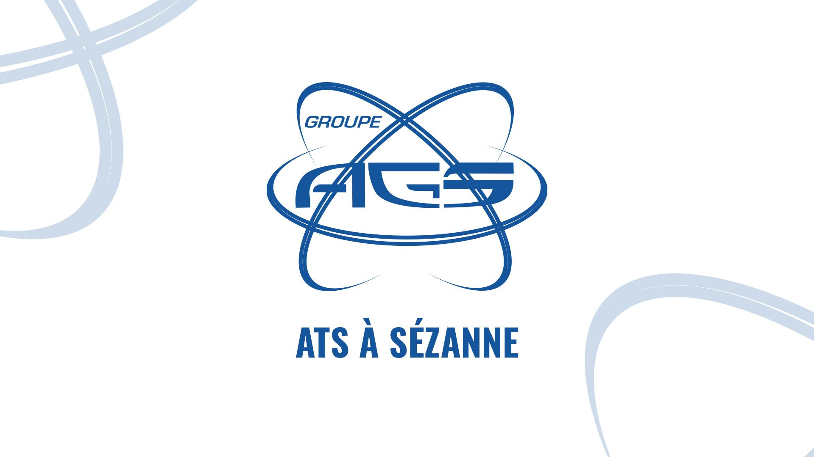
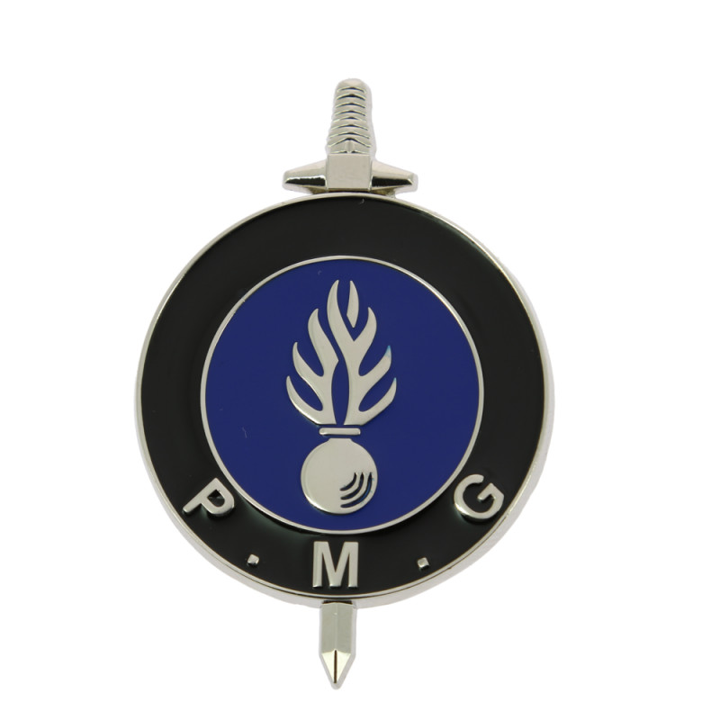

Expérience professionnelle
Voici les stages et expériences pro qui ont marqué mon parcours :
Stage chez ANAXAM – Suisse
Projet en traitement d’images tomographiques, automation, et redressement numérique.
En savoir plus →

Stage ouvrier chez AGS – ATS Sézanne
Immersion dans l’univers de l’usinage de haute précision : mécanique, marquage, logistique, montage…
En savoir plus →

Réserviste – Gendarmerie nationale
Formation militaire, missions de sécurité publique, engagement au service de la population.
En savoir plus →
Ouvrier agricole – Champagne
Pallisage et vendanges manuelles pendant 3 saisons estivales, travail physique et rigoureux en équipe.
En savoir plus →